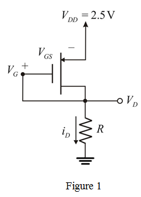

From the circuit, the source voltage is,
From the circuit, the source voltage is,
The voltage  is,
is,
Thus, the Gate-to-Source voltage is
Refer to Figure P5.49 in the textbook for the circuit.
Redraw the circuit by representing voltages and current in the circuit as shown in Figure 1.

From the circuit, the source voltage is,
From the circuit, the source voltage is,
The voltage is,
Thus, the Gate-to-Source voltage is
The drain current is,
Substitute for  , for
, for  ,
,  for
for  , for
, for  , and
, and  for
for  in the equation.
in the equation.
Thus, the value of  is .
is .
The drain resistance is,
Therefore, the value of  is .
is .